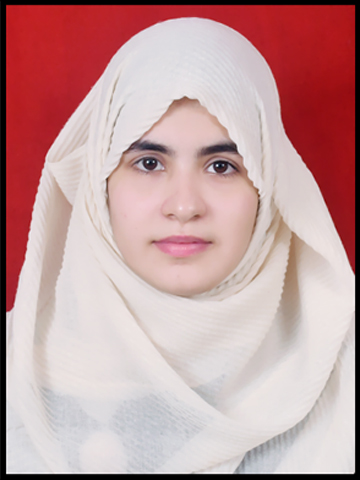

Hello everyone,

My name is Shereen Fatima I am 21 years old.I belong to Kanpur.I am graduated with bsc hons(chemistry)from JAMIA MILLIA ISLAMIA.
Currently I am persuing my MCA from KIET Group of Institution, muradnagar .My strength is that
i am optimistic,love to interract with peoples and i am hardworking also and always try to grasp new things
my biggest fear is that i trust people easily with no limits and i have a public speaking phobia
my opportunity is that i was selected as cultural captain at my scool time in my 11th and 12th standard
i gave two times ssb interviews for two star rank officer and my philosphy is that don't take everything granted
Kanpur is an industrial city in the central-western part of the state of Uttar Pradesh, India.
Kanpur became one of the most important commercial and military stations of British India.
Kanpur is also the financial capital of Uttar Pradesh.
Nestled on the banks of Ganges River, Kanpur stands as the major financial and industrial centre of North India and also the ninth-largest urban economy in India.
Today it is famous for its colonial architecture, gardens, parks and fine quality leather and textile products which are exported mainly to the West.
Getting an MCA degree after graduation offers many advantages. Besides preparing you for a career in the IT sector, you will learn about the latest innovations and technology.
A Master of Computer Applications will also provide you with solid analytical and logical knowledge.
As compared to Bachelor of Computer Applications (BCA) graduates, Master of Computer Applications (MCA) graduates are more likely to land a good job. As a result, their salaries are higher. They can even get promoted faster and progress into management.
Plus, they're more likely to enjoy outstanding benefits and start with a higher salary than many master's degree students.
Another major advantage of getting a Master of Computer Applications degree after graduation is that you'll have a lot more job options. Once you get your degree, you'll be well prepared to pursue your passions and become a successful professional.